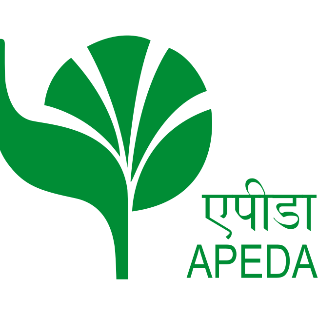
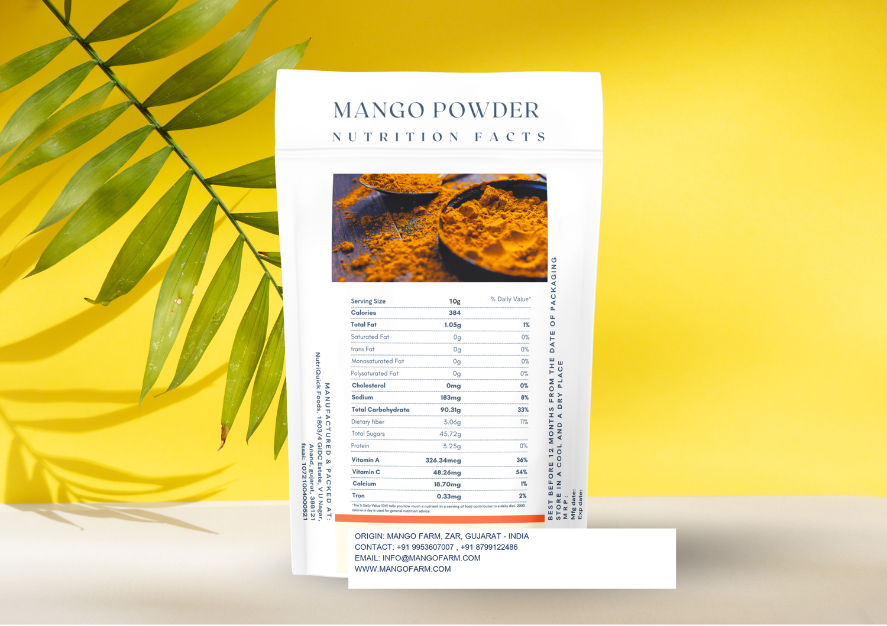

GI-Tagged Gir Kesar - APEDA Certified
Gir Kesar Mangoes,
export-grade for the world.
From our modern orchards in Talala, Gir to importers across 10+ countries - premium Kesar mangoes, canned pulp and freeze-dried powder, backed by full compliance, cold-chain logistics and traceability.


Why partner with us
An export partner built for reliability
We combine modern orchard practices with full compliance, packaging and logistics - so your shipments arrive consistent, certified and on schedule.
Single-Origin, GI-Tagged
100% Gir Kesar with a Geographical Indication tag - verified provenance from a single, traceable growing region.
APEDA Export Compliance
APEDA-registered farms and pack-house with documentation, residue testing and phytosanitary handling for smooth customs clearance.
Cold-Chain Integrity
Pre-cooling, controlled-atmosphere storage and reefer logistics maintain firmness and shelf life from orchard to port.
Full Traceability
Lot-level tracking from farm block to container - batch codes, harvest dates and QC records available for every shipment.
Custom & Private Label
Retail-ready cartons, food-service packs and private-label pulp/powder built to your market's specifications.
Reliable Volume & Logistics
Consistent season-long supply, FOB/CIF terms and documentation handled end-to-end by a single accountable team.
Our products
Mango varieties & processed range
Premium Kesar at the core, plus a curated selection of India's finest GI varieties - available fresh, as aseptic pulp, and as freeze-dried powder.

Gir Kesar
Saffron-hued, aromatic and fibre-free - our flagship export variety from the Gir region.

Alphonso
The "King of Mangoes" - rich, creamy and globally sought after.

Aseptic Pulp
Canned Kesar & Totapuri pulp for beverages, dairy and food processing.
Mango Powder
100% freeze-dried Kesar powder - non-GMO, shelf-stable, year-round.
Harvest calendar
Plan your season with confidence
Fresh Kesar ships at peak ripeness through the Indian summer, while aseptic pulp and powder are available all year - so you can secure supply ahead of demand.
Indicative windows. Contact us for variety-specific shipping schedules and pre-booking.

Now available at MODERN HARVEST
Fresh Kutch GI Tagged Dates
Naturally sweet, farm-fresh and GI Tagged - sourced directly from Kutch farms, hand-selected and chemical-free. A new premium category, delivered fresh.
How we export
From orchard block to your port
A controlled, documented process at every stage - engineered for quality, compliance and on-time delivery.
Sourcing & Grading
Hand-picked at optimal maturity from GI-tagged Gir orchards, then graded by size, brix and appearance.
Quality & Compliance
Residue testing, APEDA documentation, hot-water treatment and phytosanitary certification.
Box Packing & Dispatch
Pre-cooled, box-packed to market spec and held in controlled-atmosphere storage before dispatch.
Global Logistics
Reefer containers, air freight options and full export documentation - FOB or CIF.



Packaging standards
Export-grade & private-label ready
Protective, food-safe and built for long-haul transit - with full flexibility for your brand and market.
- ✓ Ventilated corrugated cartons, 4-6 kg retail & bulk
- ✓ Aseptic cans & drums for pulp (food-processing grade)
- ✓ Resealable, barrier pouches for powder
- ✓ Custom artwork, labelling & private label
Global markets
Trusted across 10+ countries
From the Gulf to Europe, North America and Southeast Asia - we ship to importers, distributors and retail chains worldwide.
Sustainability
Naturally grown, responsibly exported
We follow Good Agricultural Practices and natural-farming methods - protecting soil health, water and the long-term resilience of our orchards.
Naturally ripened, no artificial agents
Good Agricultural Practices across blocks
Minimal synthetic inputs, healthy soil
Long-term partnerships with grower families
Our legacy
Modern orchards. One standard.
A modern Gir Kesar orchard operation in Talala, established 2026 and built from day one as an export house - serving the world without compromising the quality the orchards were built on.
Modern orchards established in Talala, Gir.
Grower partnerships across the Gir belt.
APEDA registration & first export shipments.
Exporting fruit, pulp & powder to 10+ countries.
Trusted by buyers worldwide
What our partners say
Consistent grade, clean documentation and on-time reefer shipments. MODERN HARVEST has become our reliable Kesar source for the Gulf retail season.
Their aseptic pulp meets our processing specs lot after lot. Traceability and responsiveness are exactly what we need from a supplier.
Private-label packaging was handled end-to-end. Quality on arrival was premium and the paperwork cleared customs without issues.
FAQ
Export essentials
Fresh Kesar typically ships by the full or part container load; pulp and powder are available from a single pallet. Share your target market and volume and we'll confirm the most efficient configuration.
We work on FOB and CIF terms via major Indian ports. Payment is typically by advance and balance against documents or L/C - confirmed per order.
Yes. Request a sample of fresh fruit, pulp or powder and we'll arrange dispatch with specifications and certificates of analysis.
Our farms and pack-house are APEDA registered, FSSAI compliant, and our Kesar carries a GI tag. Phytosanitary and residue documentation accompanies every shipment.

Start an export conversation
Ready to source premium Kesar mangoes?
Tell us your market and volumes - our export team replies within one business day with pricing, specs and a sampling plan.